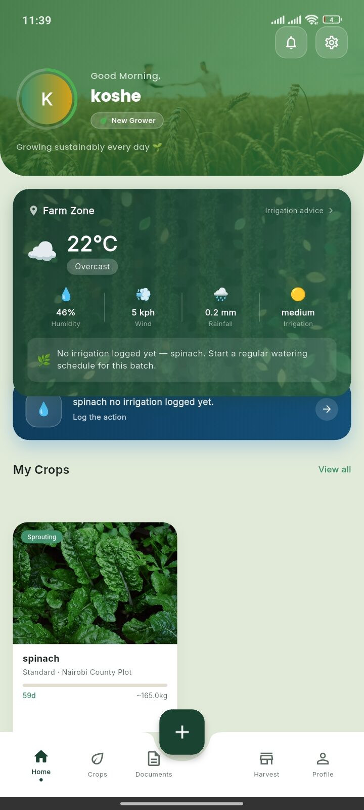

The Field Gallery
Every voice, documented.
A photo archive from GreenTrack's field research around Subukia, Kenya — farmers, crops, market days, and the app itself, tested in the hands of the people it's built for. Every photograph here is real field documentation, not stock photography.

Interviewer & Field Photography — George Ngugi
GreenTrack Field Research · Subukia, Kenya
How this archive works. Every person documented here reviewed and signed a written consent form before being photographed or interviewed. Full stories exist for the farmers we spoke with at length — Erah Chomba, Jonathan Chomba and John Maina. Everyone else pictured is presented honestly, with only what the photograph itself shows — no invented names, roles or quotes.
 Erah Chomba, grower — with George Ngugi
Erah Chomba, grower — with George Ngugi Signing consent for documentation
Signing consent for documentation Spinach, early growth — Erah's plot
Spinach, early growth — Erah's plot Working the spinach beds
Working the spinach beds Jonathan Chomba, coffee farmer
Jonathan Chomba, coffee farmer Coffee rows, Subukia
Coffee rows, Subukia Cherries ripening unevenly, same branch
Cherries ripening unevenly, same branch Jonathan, working the rows
Jonathan, working the rows Jonathan's coffee plot, SubukiaJonathan, among his coffee treesJohn Maina, among his maize
Jonathan's coffee plot, SubukiaJonathan, among his coffee treesJohn Maina, among his maize John, beneath his banana tree
John, beneath his banana tree Ginger, growing low among the maize
Ginger, growing low among the maize John, checking the ginger
John, checking the ginger Intercropped seedlings, same plot
Intercropped seedlings, same plot Grace Wanjeri, at her stall
Grace Wanjeri, at her stall Grace Wanjeri, with George Ngugi
Grace Wanjeri, with George Ngugi A visit to the Sub-County horticulture office
A visit to the Sub-County horticulture office George Ngugi, in the field
George Ngugi, in the field Quick actions — AI pest scan
Quick actions — AI pest scan Logging a batch, in the field
Logging a batch, in the field
A grower's dashboard, mid-seasonGeorge Ngugi
Software Developer · Field Researcher · Product BuilderGeorge combines software development with direct field research to understand real-world problems before building technology to address them. Every photograph in this archive was taken, and every interview conducted, on visits he made himself around Subukia — the same fieldwork that continues to shape what GreenTrack builds next.